숲의 끝. 길이 끊긴 자리에 희미한 빛 하나가 떠 있다.
오인턴
“8주 동안 정책자료만 했잖아.
근데 다음 달 내 발표는 정책자료가 아닌데… 회사 가면 이거 쓸 수 있긴 한 거야?”
숲의 끝. 길이 끊긴 자리에 희미한 빛 하나가 떠 있다.
“8주 동안 정책자료만 했잖아.
근데 다음 달 내 발표는 정책자료가 아닌데… 회사 가면 이거 쓸 수 있긴 한 거야?”
희미한 빛이 깜빡인다.
“…근데 저 빛, 어디서 봤는데.”
▼그 빛이 길 한가운데로 내려앉는다. 1주차, 창밖에서 스며들던 바로 그 빛이다.
“용사여, 그대의 세계로 돌아가는 문은 이 빛 너머에 있어요.
그 전에, 지나온 일곱 스테이지를 하나씩 물어볼게요.”
페어리가 오인턴 귀에 대고 속삭인다.
“처음에 용사님을 부른 그 빛이에요.
이 숲의 마지막 문지기예요. 두 시험을 넘으면 저 빛이 현실로 돌아가는 문이 돼요.”
“마지막이에요. 이번엔 보스라고 불러도 돼요.
쓰러뜨리는 싸움이 아니라, 인정받는 싸움이지만요.”
.md 여섯 파일과 내 템플릿, 그리고 보고·발표 자료가 쌓이는 내 업무 폴더 하나 — 세 건이면 된다.
한글 파일(hwp)은 hwpx로 다시 저장해 넣는다. 비공개 표시 파일은 뺀다.
1주차에 ‘클로드를 정복하세요’라는 말만 남기고 사라진 그 빛. 회사로 돌아가는 문이 된다. 일곱 스테이지를 하나씩 묻고, 마지막엔 시종을 데려가 보라고 한다. 정책자료 폴더 안에서만 도는 시종은 아직 내 것이 아니다.
왜 그럴까?
첫 번째 문이 열렸다.
무엇부터?
두 번째 문이 열렸다.
어떻게 고칠까?
세 번째 문이 열렸다.
어떤 줄이었을까?
네 번째 문이 열렸다.
누구 짓일까?
다섯 번째 문이 열렸다.
어떻게 고칠까?
여섯 번째 문이 열렸다.
어디서 올까?
일곱 번째 문이 열렸다.
빛이 일곱 번 깜빡이더니, 한층 밝아진다.
“...모두 잘 기억하고 있군요.
하지만 그대의 시종들은 아직 정책자료밖에 몰라요. 데려가 보세요.”
오인턴이 파일 여섯을 내려다본다.
“데려가려면 내 일에 맞게 고쳐야 하잖아.
그냥 ‘내 일에 맞게 알아서 잘 바꿔줘’ 하면 안 돼?”
페어리가 처음으로 정색한다.
“그 ‘알아서 잘’이 제일 위험해요.
왜 그런지부터 봐요. AI를 어떻게 보느냐의 문제예요.”
안 적힌 자리를 그럴듯하게 지어서 채운다.
안 적힌 건 영원히 안 한다.
“후임도 똑같아요.
그래서 첫 단계는 시키는 쪽, 용사님이 일하는 방식을 아는 거예요.”
후임에게 '알아서 잘'이라고 하면 분명 몇 번이나 피드백 줘야하는 것처럼, 결국 자기 자신의 일 스타일을 분석하는 게 수정 없는 프롬프팅의 첫 단계.
오인턴이 수첩을 꺼낸다.
“알아서 잘은 없다는 거네.
그럼 내가 어떻게 일하는지부터 적고, 그걸로 주문서를 고치자.”
폴더 전체면 규칙.md, 그 시종만이면 시종 파일 — 모든 시종이 지킬 건 규칙.md, 하나만 지킬 건 그 시종 파일에.“외부 보고용이라 약어는 풀어 쓴다” → 규칙.md · “결정사항과 할 일을 뽑는다” → 시종.md
명사부터 바꿔 먼저 돌려 본다 — “정책자료” → “회의록”. 안 맞는 데가 보이면 그때 줄을 늘린다.
안 적었으면 안 한다 — 원하는 게 있으면 한 줄로 적는다. Dr.딱거기까지.“기대효과 덩어리를 쓴다”
모르는 건 먼저 묻게 한다 — “쓰기 전에 ○○를 묻는다” 한 줄.“쓰기 전에 보고 대상과 발표 시간을 묻는다”
근거 없는 건 ‘추정’이라고 쓰게 한다 — 지우게 하지 말고 표시하게 한다. 볼 때 가려낼 수 있다.
“금지만 적으면 뭘 해야 할지 몰라요.
할 일로, 숫자로, 이유까지 같이 적어요.”
“이 줄만 바꿔. 나머지는 한 글자도 건드리지 마.” — 통째로 맡기면 묻지도 않은 규칙을 지어 덧붙인다. 만들면서 실제로 겪었다.
저장 전에 바뀐 줄만 전 → 후로 — 보고 고른다. 고른 것만 고친다.
한 번에 한 겹씩 — 바꾸고 → 돌려 보고 → 다음 줄.
프로젝트 밖 새 대화에서 — Claude 프로젝트 안에서 고치면 프로젝트 기억이 섞여 든다.
새 파일이면 첫 줄 제목 = 저장 이름 — 메모장이 첫 줄로 이름 칸을 채운다.# 회의록정리 → 회의록정리.md
고친 걸 받을 땐 조각 말고 파일 전체 — 전체를 받아 통째로 붙인다. 조각을 끼우다 줄이 어긋난다.
「○○.md 읽고, ○○해줘」, 결과 파일은 날짜까지 — ‘콘티’만 쓰면 폴더 맨 위 콘티.md와 헷갈린다.「콘티.md 읽고, 결과 폴더의 2026-10-30_기획안.md로 콘티 써줘」
“파일을 찾지 못했다” = 폴더가 안 붙은 대화 — 시종 탓이 아니다. 이 대화에 폴더를 연결한다.
“전부 우리가 한 번씩 걸려 넘어진 데예요.
이제 용사님 폴더로 가요.”
빛 앞. 페어리가 오인턴의 가방을 가리킨다.
“진짜 폴더로 가기 전에 하나만요.
채팅에 올리면 서버가 글자로 바꿔 주지만, 폴더는 클로드가 파일을 직접 열어요.”
가방에서 한글 파일이 삐죽 나와 있다.
“그래서 폴더엔 클로드가 열 수 있는 형식으로 넣어요.
hwp는 AI가 읽기 아주 곤란해요. 한글에서 hwpx로 다시 저장하면 돼요.”
정책자료처럼 읽고 정리할 것이 반복해서 쌓이는 폴더. 매달 오는 회의록, 매주 받는 보고서, 공문철. 지금 세 건 이상 들어 있어야 한다.
밖으로 나가면 안 되는 자료(개인정보·대외비)가 든 폴더는 고르지 않는다. 폴더를 붙이는 순간 안의 파일이 전부 서버로 간다 — 규칙.md의 “넣기 전에 내가 거른다”가 여기서 작동한다.
옮겨 갈 폴더를 골랐나?
폴더가 정해졌다. 이제 파일을 옮긴다.
규칙.md · 시종.md · 기획안.md · 콘티.md · 템플릿_시안만들기.md · 그래프.md, 그리고 7주차에 만든 내 템플릿 pptx. 결과 폴더, 디자인 폴더, 지난 결과물은 가져가지 않는다 — 옛 결과가 남아 있으면 시종이 어느 걸 읽을지 헷갈린다.
* 템플릿_질문지.md도 가져가면, 나중에 템플릿을 다시 지을 때 쓴다.
복사하고 나니?
파일이 내 자리로 왔다. 아직 정책자료 얘기를 하는 파일들이다.
모든 md에 남은 ‘정책자료’라는 말, 그리고 시종.md의 뽑을 것과 결과 파일 이름을 내 일로 바꾼다. 메모장으로 직접 고쳐도 되고, 클로드에게 시켜도 된다. 시킬 땐 한 번에 맡기지 않는다 — 먼저 보여 달라, 고른 것만 고쳐라.
고치고 보니?
주문서가 내 일의 이름을 알게 됐다.
그 폴더를 새 대화에 연결하고 「시종.md 읽고, ○○ 정리해줘」. 결과를 보고 안 맞는 데가 있으면 그때 줄을 늘린다 — 안 적었으면 안 한다, 모르면 먼저 묻게, 근거 없으면 ‘추정’. 기획안 덩어리 순서도 우리 부서 순서로 바꿀 수 있다.
돌려 보니?
늘린 줄은?
시험 ② 절반. 시종이 내 일을 한다.
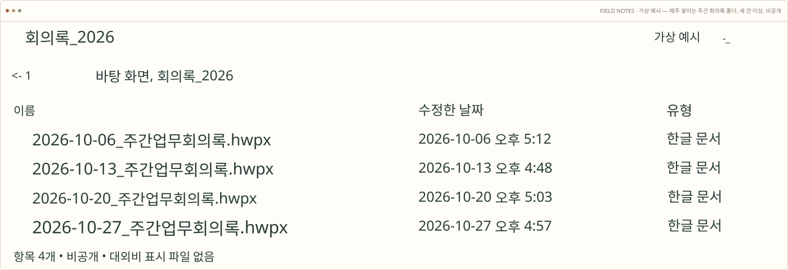
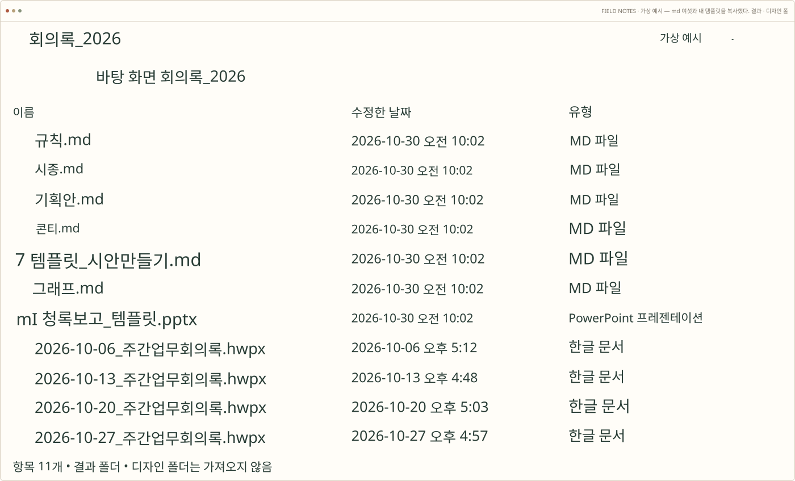
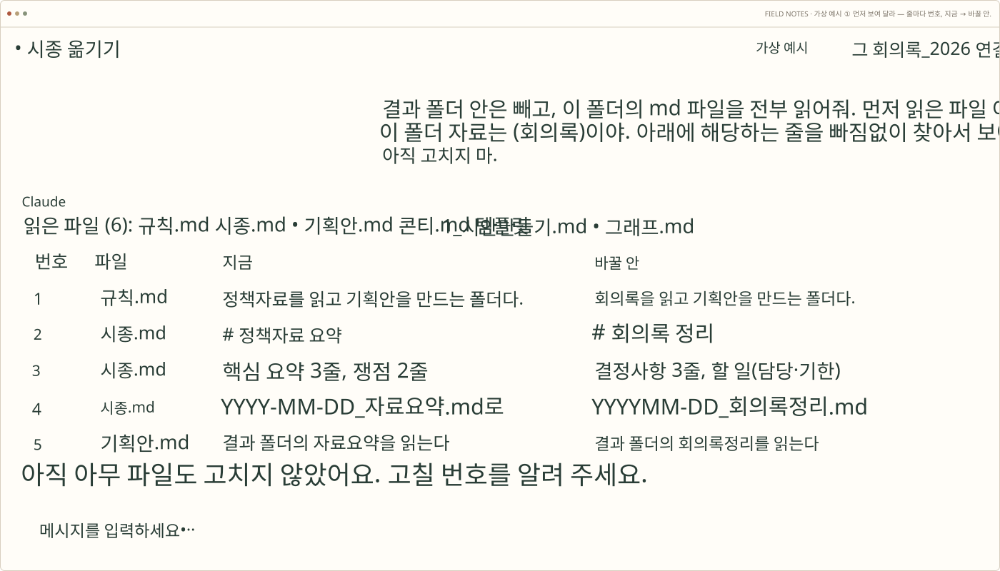
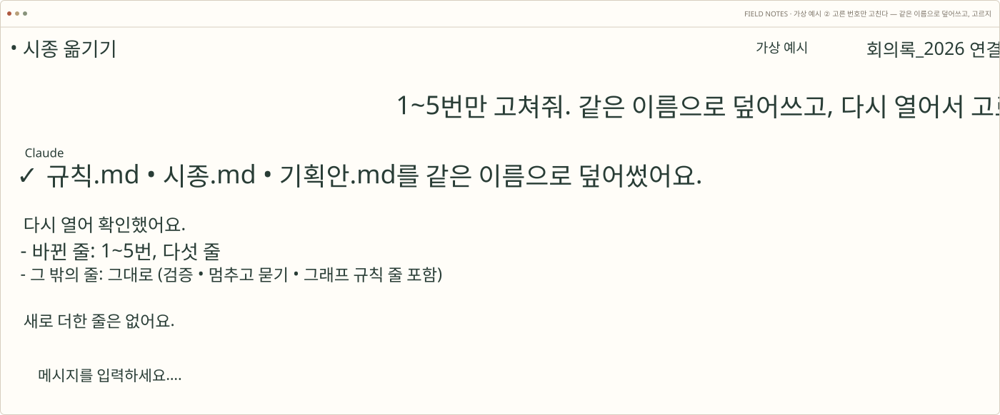
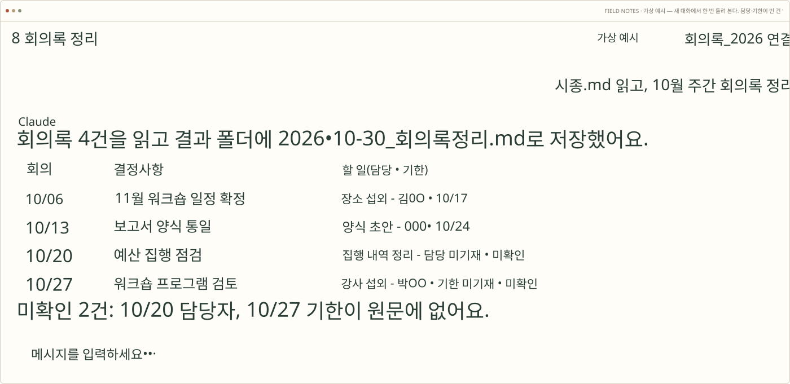
# 1. 먼저 보여 달라 — 아직 고치지 않는다 결과 폴더 안은 빼고, 이 폴더의 .md 파일을 전부 읽어줘. 먼저 읽은 파일 이름 목록부터 보여줘. 이 폴더 자료는 (회의록)이야. 아래에 해당하는 줄을 빠짐없이 찾아서 보여줘. 번호는 파일을 넘어 1부터 하나로 이어 매기고, 번호 / 파일 이름 / 지금 → 바꿀 안 으로. - ‘정책자료’라는 말이 들어간 줄 - 시종.md에서 무엇을 뽑는지 정한 줄, 결과 파일 이름 줄 (뽑고 싶은 것: (결정사항 3줄, 할 일(담당·기한))) 줄을 새로 더하는 안은 내지 말고, 있는 줄의 낱말만 바꾼 안으로. 검증 · 점검 기록 · 멈추고 묻기 · 그래프 규칙 줄은 후보에 넣지 마. 아직 파일은 고치지 마. # 2. 고른 줄만 고친다 (고른 번호 — 예: 1, 2, 4)번만 그대로 고쳐줘. 나머지는 한 글자도 건드리지 마. 원래 파일에 같은 이름으로 덮어써. 새 파일을 만들지 마. 규칙.md의 ‘결과 폴더에’·‘_2’ 규칙은 이번엔 쓰지 마. 다 고치면 파일을 다시 열어서 바뀐 줄의 전 → 후, 그리고 고르지 않은 줄이 그대로인지 같이 보여줘. # 3. 내 일에만 있는 것을 더한다 — 먼저 묻게 우리 부서 보고서 덩어리는 이렇게 바꾼다. (배경 → 현황, 쟁점 → 문제점, 제안 → 개선 방안, 기대효과 → 기대효과, 다음 단계 → 향후 계획) 순서는 (현황 → 문제점 → 개선 방안 → 기대효과 → 향후 계획)이야. 기획안.md와 콘티.md에서 덩어리 이름·순서가 적힌 줄을 모두 찾아, 이름과 순서만 바꾼 안을 전 → 후로 보여줘. 설명 줄과 ‘(숫자 하나 이상)’ 같은 조건은 그대로 둔다. 콘티.md 순서 줄의 ‘(마무리)’는 지운다. 줄을 새로 더하지 않는다. 템플릿_시안만들기.md의 ‘내 수정 규칙’에 옛 덩어리 이름이 있으면 목록으로만 보여줘. 고치기 전에 궁금한 게 있으면 먼저 물어봐. 내가 좋다고 하면 그때 고쳐. 다른 줄은 한 글자도 건드리지 마.
1 · 보여만 — 통째로 맡기면 규칙을 지어 덧붙인다. 먼저 보고 고른다. 번호를 파일 넘어 하나로 이어야 2번에서 헷갈리지 않는다.
2 · 번호로, 같은 이름으로 — 규칙.md는 ‘새 파일은 결과 폴더에, 같은 이름이면 _2’라고 한다. 이번만은 쓰지 말라고 해야 원래 파일이 고쳐진다.
3 · 내 일 — 주황색은 예시다. 바꿀 이름을 짝으로 주면 설명을 새로 지어 쓰지 않는다. 6주차에 ‘우리 부서 보고서는 순서가 다른데?’ 했던 게 여기다.
먼저 물어봐 — 모르는 걸 지어내지 않고 묻는다.
메모장으로 직접 — 직접 고쳐도 결과는 같다. 바꾸는 곳만 같으면 된다.
정리 파일에 ‘결정사항’ 열이 생겼다.
“명사 몇 개 바꿨는데 내 회의록 얘기를 해.
8주 동안 얹은 줄은 그대로 따라왔고.”
빛이 오인턴의 폴더 위로 내려와 머문다.
“시종이 그대의 말을 알아듣는군요.
마지막이에요. 그 폴더에서, 처음부터 끝까지 한 벌 만들어 보세요.”
페어리가 오인턴의 어깨에 내려앉는다.
“만들기 전에 하나만요.
말로 시킬 때, 사람들이 자주 걸려 넘어지는 데가 있어요.”
“사람끼리는 눈치로 채우는 빈칸이에요.
클로드는 그 빈칸을 평균으로 채워요.”
“고쳐 쓸 땐 하나만 기억해요.
처음 보는 사람이 읽어도 하나로만 읽히는가.”
「기획안.md 읽고, 결과 폴더의 YYYY-MM-DD_자료요약.md로 기획안 써줘」. 시종이 쓰기 전에 목표·기대효과·대상·시간을 묻는다 — 이번엔 내 진짜 발표 얘기로 답한다. 주제 후보가 나오면 내가 고른다.
* 정리 파일 이름을 바꿨으면 그 이름으로. 날짜는 결과 폴더의 실제 날짜로.
기획안을 열어 보니?
내 발표의 뼈대가 섰다.
「콘티.md 읽고, 결과 폴더의 YYYY-MM-DD_기획안.md로 콘티 써줘」. 시종이 덩어리마다 몇 분 쓸지 묻는다. 내 발표 시간으로 답한다.
콘티를 보니?
뭘 말할지 정해졌다.
「템플릿_시안만들기.md 읽고, 결과 폴더의 YYYY-MM-DD_콘티.md로 시안 만들어줘」. 템플릿을 물으면 내 템플릿을 고른다. 그래프는 그래프.md가 맡는다 — 시안과 함께 그래프 점검표가 나오는지 본다.
결과 폴더를 보니?
내 자료가 내 템플릿을 입었다.
내 자료, 내 템플릿, 내 발표 시간. 숫자 하나는 출처를 보고 원문과 대 본다. 고칠 곳은 말로 — 장 이름·개수·이유를 구체적으로.
파워포인트로 열어 보니?
보스 격파. 시즌 1 종료 — 내 자리에서, 처음부터 끝까지 돌았다.
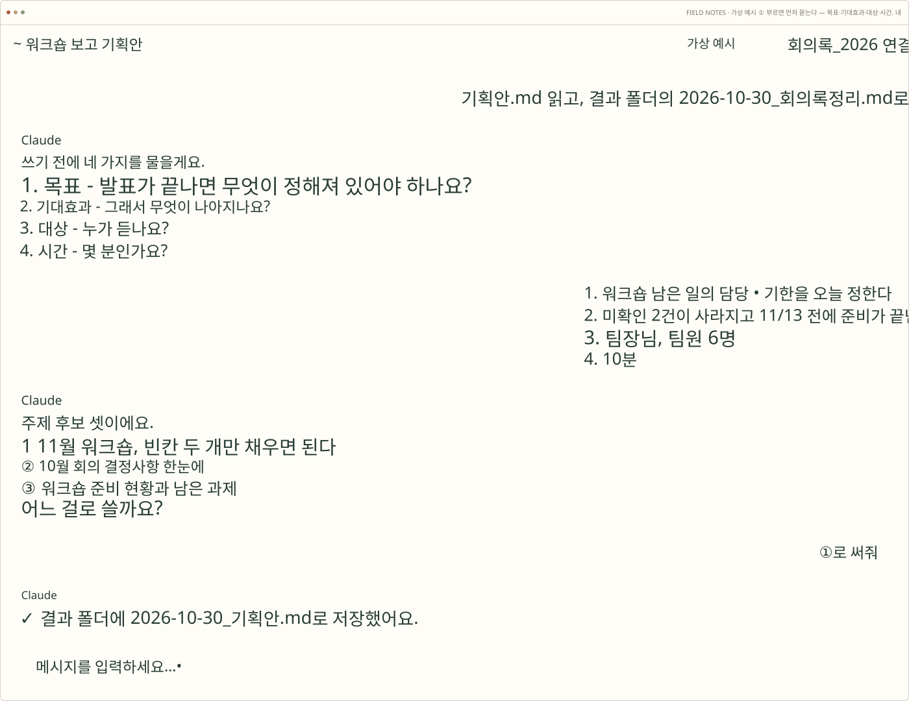
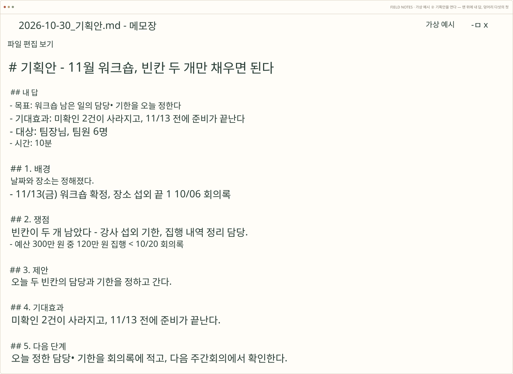
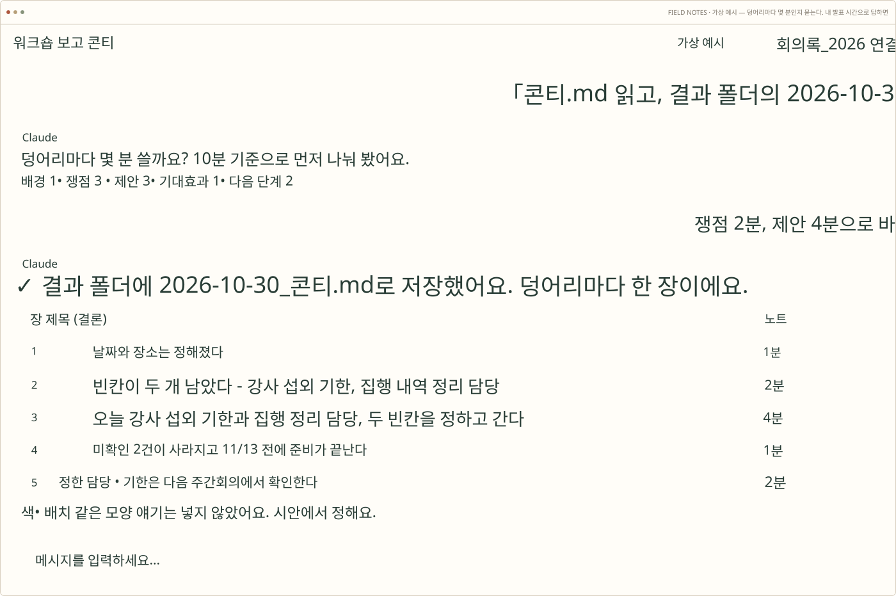
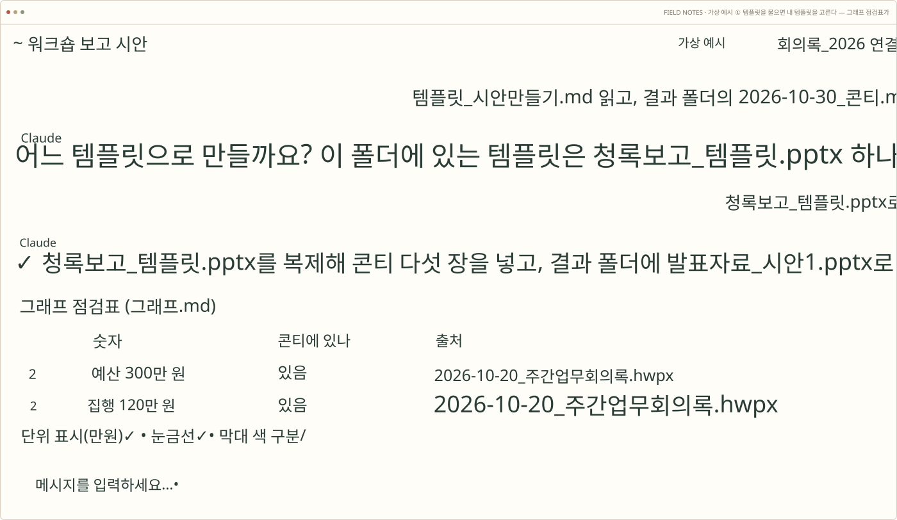
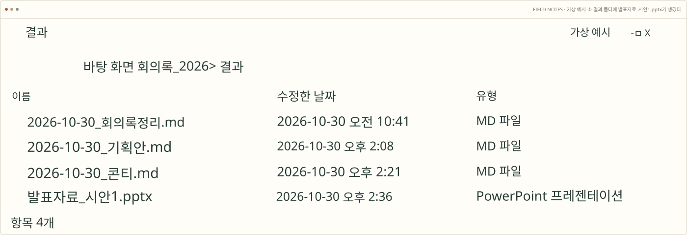
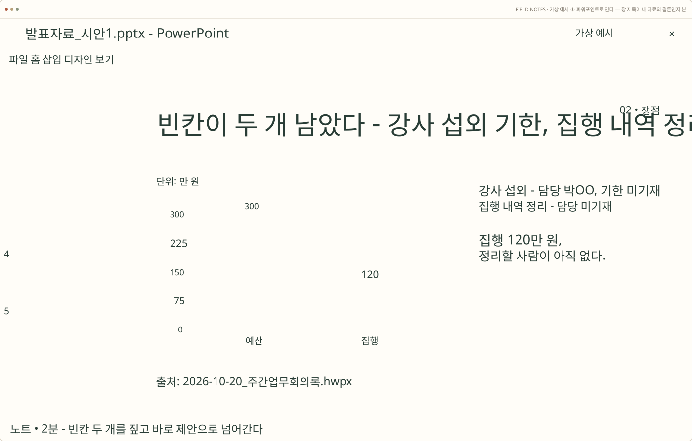
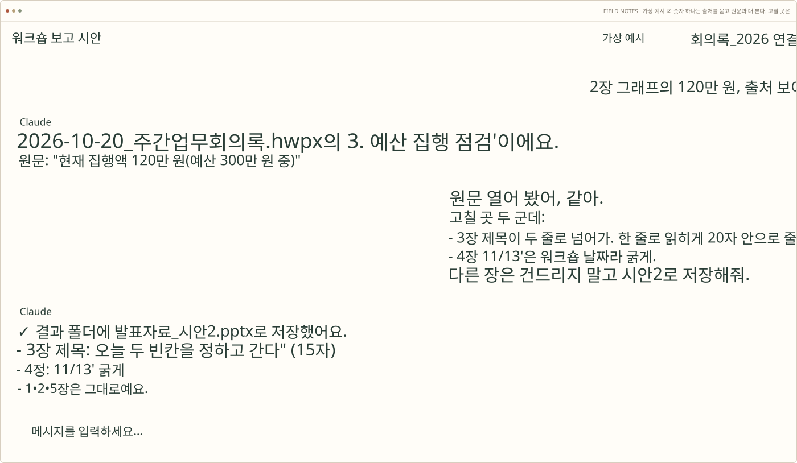
내 자료로 만든 시안이 열린다. 숲 끝의 빛이 환하게 번진다.
“용사님 일로 돌았어요.
처음부터 끝까지요.”
오인턴이 결과 폴더를 훑는다. 요약, 기획안, 콘티, 시안.
“근데 페어리, 이게 다 에이전트야?
회사에선 다들 에이전트, 에이전트 하는데 뜻이 다 달라.”
페어리가 날개를 접고 진지해진다.
“좋은 질문이에요.
실은 정해진 뜻이 없어요. 그래도 많이 쓰는 기준은 있어요.”
다들 저마다 다른 뜻으로 쓰면서,
남도 같은 뜻으로 알 거라 여긴다.
개발자 사이먼 윌리슨(Simon Willison)이 짚은 문제. 그래서 누가 ‘에이전트’라고 하면, 무엇을 가리키는지 먼저 묻는 게 맞다.
현업에서는 더 느슨하다. 파일·화면을 직접 만지는 제품도, 역할과 지시만 씌운 챗봇도 ‘에이전트’라고 부른다.
Anthropic의 글 ‘Building effective agents’(2024)가 나눈 기준이다. 둘을 묶어 ‘에이전틱 시스템’이라고 부른다.
anthropic.com/research/building-effective-agents
simonwillison.net/2024/Dec/20/building-effective-agents
3주차부터 써 온 덱의 정의 — 시작 후 중간을 누가 채우느냐 — 는 이 기준과 맞는다. 단계 사이에 사람이 확인하는 방식을 업계에선 ‘휴먼 인 더 루프(human-in-the-loop)’라고 부른다.
페어리가 결과 폴더 위를 천천히 돈다.
“그러니까 용사님 건 업무 폴더에서 일하는 에이전트예요.
그리고 시종들을 순서대로 잇고, 사이사이 보는 건 용사님이고요.”
오인턴이 멈칫한다. 빛이 천천히 커지기 시작한다.
“잠깐.
그럼 이 부대를 부리는 건… 나야?”
빛이 문만큼 넓어진다. 그 너머로 익숙한 사무실 불빛이 비친다.
“부대를 부리는 자는 처음부터 그대였어요. 시종을 고르고, 잇고, 사이사이 본 것도 그대예요.
그대는 어엿한 시종들의 지휘관이에요.”
오인턴이 빛 앞에서 멈춘다.
“‘알아서 잘’로 돌아가는 시종은 없었어.
내가 정확하게 시킨 만큼 정확하게 일해내는 나의 부대... 이해했어.
이제 가볼게.”
포탈 앞. 페어리가 오인턴의 등을 본다.
“저쪽에서 봤을 때, 지금 용사님이 빛나 보였을 거예요.
1주차에 창밖에 있던 그 빛처럼요. …다음은 돌아간 자리예요.”
‘정복’의 뜻이 한 번 바뀌었다. 1주차엔 부릴 줄 아는 것이었고, 지금은 어디서든 부릴 수 있게 만드는 것이다. 그리고 부리는 자는 처음부터 나였다.
빛이 잠시 말을 고른다.
“...”
▼빛이 천천히 문 너머로 사그라든다.
“언젠가 부대의 지휘관까지 시종에게 맡길 수 있는 그대가 되길...”
▼